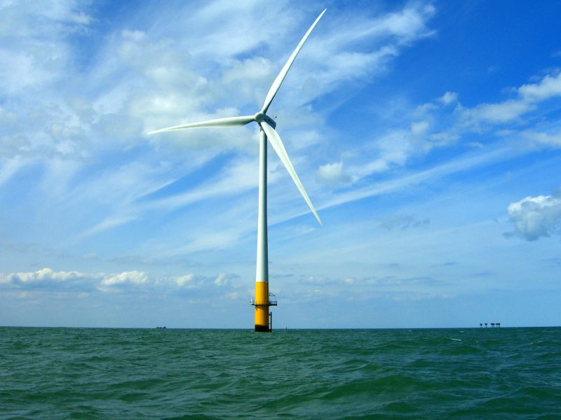

About

The SPARK consortium, led by Stillstrom by Maersk, is developing and demonstrating offshore power infrastructure for stationary vessels at anchor.
The EUR 5 million Horizon Europe project brings together eight partners from five countries. Over 36 months, the team will design, build and validate a scalable Offshore Power Zone in Skagen, one of Northern Europe's busiest anchorage hubs.

A practical path to lower emissions
Clean electricity, delivered offshore
Vessels waiting near shore commonly keep auxiliary engines running to maintain onboard systems. SPARK addresses this overlooked source of emissions by enabling ships to connect to an offshore power point supplied through the Port of Skagen.
The pilot will initially support one live ship connection. Alongside technical delivery, the consortium will examine safety, simulation, commercial viability and regulatory pathways so the system can be replicated and expanded.